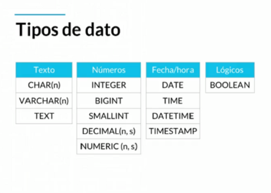
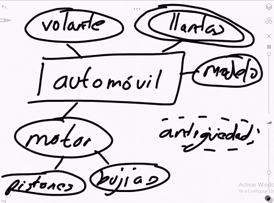
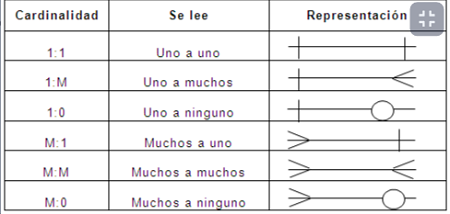

| Referencia | Descripcion | Ejemplo |
|---|---|---|
| 3 conceptos |
hay tres conceptos entorno a las Bases de Datos 1. Lenguaje 2. motor: Software que provee un conjunto de servicios encargados de administrar una base de datos. PostgreSql, SqlServer, mongoDb...entre otros 3. servidor: Es el equipo que provee el hardware para que el motor instale la BD. Computador que tiene un motor de base de datos instalado y en ejecución. |
Ahora bien estas bases de datos como PostgreSQL son Objecto-Relacional esto quiere decir que tienen una estructura como la de programacion orientada a objetos donde tiene herencia, interfaces  |
| Tipos de datos | ||
| Standar ACID | Es el standar que deben de cumplir las bases de datos |
• A: Atomicity – Atomicidad -> Separar las funciones desarrolladas en la BD como pequeñas tareas y ejecutarlas como un todo. Si alguna tarea falla se hace un rollback(Se deshacen los cambios) • C: Consistency – Consistencia -> Todo lo que se desarrolló en base al objeto relacional. Los datos tienen congruencia • I: Isolation – Aislamiento -> Varias tareas ejecutándose al mismo tiempo dentro de la BD • D: Durability – Durabilidad -> Puedes tener seguridad que la información no se perderá por un fallo catastrófico. PostgreSQL guarda la información en una Bitácora |
| Constraints(Restricciones) |
NOT NULL : garantiza que los valores de una columna no puedan serlo NULL. UNIQUE : garantiza que los valores de una columna sean únicos en las filas de la misma tabla. PRIMARY KEY : una columna de clave primaria que identifica de forma exclusiva las filas de una tabla. Una tabla puede tener una y solo una clave principal. La restricción de clave principal le permite definir la clave principal de una tabla. CHECK : una CHECKrestricción garantiza que los datos deben satisfacer una expresión booleana. FOREING KEY : garantiza que los valores en una columna o un grupo de columnas de una tabla existan en una columna o grupo de columnas en otra tabla. A diferencia de la clave principal, una tabla puede tener muchas claves externas. Deafult Coloca un valor por defecto cuando no hay un valor especificado index Se crea por columna para permitir busquedas mas rapidas |
|
| SQL = RBD Bases de Datos Relacionales |
SqlServer = Microsoft Oracle = Oracle MySql(antes era de SunMicroSystem) = Oracle MySql(Open Source) = Oracle PostgreSQL(Open Source) MariaDB |
|
| NoSql = BD no relacionales |
mainCash casandra de Facebook MongoDB fireStore |
|
| Tecnisismo |
* las entidades son las tablas rectangulo * los atributos con los campos ovalo * hay atributos que son multivaluado (tiene multiples valores) ovalo doble * hay atributos que compuestos que en ellos hay otros atributos motor * hay atributos que se pueden inferir de acuerdo a la logica ovalo punteado * el atributo que identifica de manera unica a un objeto es subraydo y este atributo puede ser natural o artificial es decir natural que no se puede separar del objeto(cedula, numero de serie..etc) y el artificial hace referencia al que le asignados de manera apropositamente la diferenciar un objeto del otro ejemplo un id |
 |
| Entidades fuertes y debiles |
la fuerte hace referencia a que no dependen de nadie para existir la debil hace si requieren de otras entidades para existir(pueden ser debiles por entidad o por existencia) |
|
| Relaciones | Las relaciones, representadas por un rombo, sirven para crear relaciones entre entidades. Por convención las relaciones son verbos que conectan entidades. Existen entidades multivaluadas o compuestas que tienen vida propia y se relacionan con otras entidades, por lo que se pueden normalizar (concepto que se explicará luego) Cardinalidad Es una propiedad de las relaciones que indica la cantidad y correspondencia con la que puede estar relacionada una entidad y puede ser uno a uno, uno a varios, varios a uno y varios a varios. |
 |